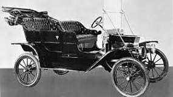

A Ford é uma das marcas de automóveis mais icônicas e reconhecidas do mundo. Fundada em 1903 por Henry Ford, a empresa tem uma história rica e diversificada que se estende por mais de um século.
Desde o início, a Ford tem sido conhecida por sua inovação em tecnologia automotiva. O Modelo T, lançado em 1908, foi o primeiro carro produzido em massa e tornou-se um dos veículos mais populares da história, tornando a mobilidade acessível a um público mais amplo.
Ao longo dos anos, a Ford continuou a liderar a indústria automotiva com avanços significativos, como o desenvolvimento do motor V8 e o lançamento do icônico Mustang, que se tornou um símbolo da cultura automotiva americana.
Além de sua reputação por produzir carros de qualidade, a Ford também é conhecida por seu compromisso com a sustentabilidade. A empresa investe em tecnologias de veículos elétricos e híbridos, bem como em iniciativas para reduzir as emissões de carbono e melhorar a eficiência do combustível.
Embora a Ford tenha enfrentado desafios ao longo de sua história, a empresa continua a ser uma das marcas de automóveis mais respeitadas e bem-sucedidas do mundo. Com uma visão voltada para o futuro e um compromisso com a inovação, a Ford está bem posicionada para continuar a liderar a indústria automotiva por muitos anos.